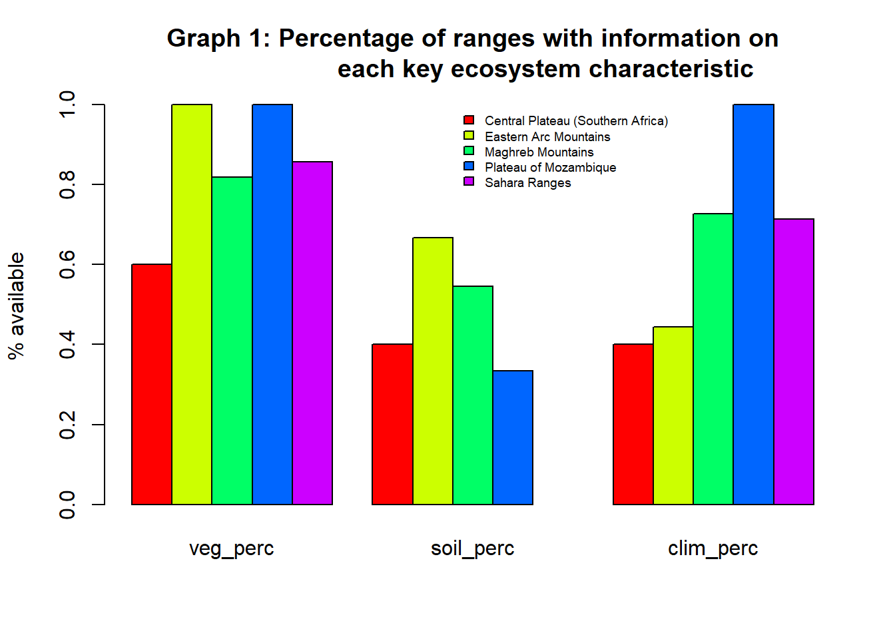
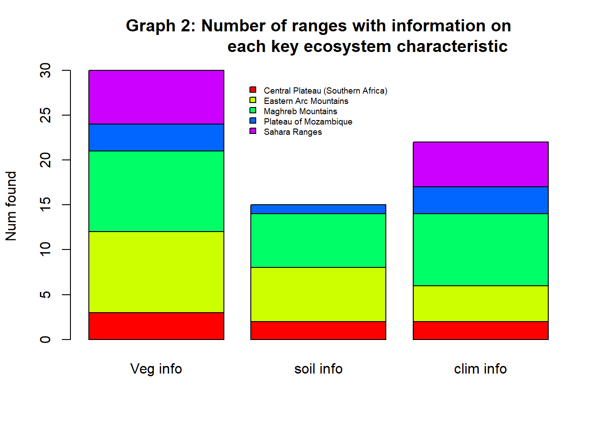
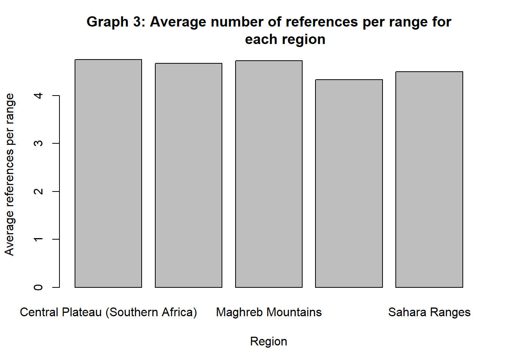
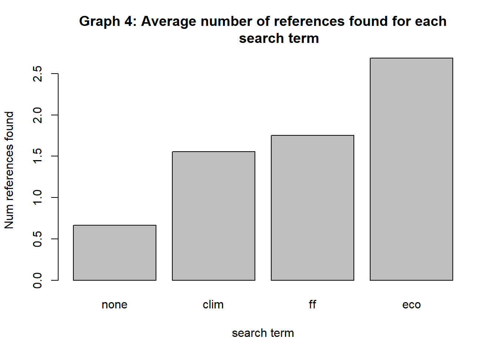

mountain_classification <- read_csv("tables/mountain classification summary.csv", show_col_types = FALSE)
datatable(mountain_classification,
caption = 'Table 1: Categorised relevant information presence for each mountain range researched',
options = list(pageLength = 15, autoWidth = TRUE))Tropical Alpine Herbland and Grassland Occurrence and Viability
Quarto
Quarto enables you to weave together content and executable code into a finished document. To learn more about Quarto see https://quarto.org.
When you click the Render button a document will be generated that includes both content and the output of embedded code.
Use sections and subsections wisely
They help to organise the content and you can use the Outline to navigate the document.
Load packages
Load the libraries or packages that you need at the beginning of the document. We use some options to supress the output of these lines of code.
Read table
This opening table shows the categorised information found for each mountain range, clarifying whether relevant information was found showing either the targeted or other ecosystems, as well as some characteristics of the given ecosystem (vegetation, soil and climate). Also included is information present on transformation, as ecosystem transformation is a regular occurrence, improving search efficiency.
The number of ranges found per region is shown below
mountain_classification %>%
group_by(Region) %>%
summarise(`Nr of ranges` = n_distinct(Range)) %>%
datatable(caption = 'Table 2: Number of ranges found per region',
options = list(dom = "t"))The information from table 1 has been synthesised below to show the presence of information relating each main ecosystem characteristic for each region.
info_perc <- mountain_classification %>%
group_by(Region) %>%
summarise(`Nr of ranges` = n_distinct(Range),
`Veg info` = sum(if_else(`Info on vegetation` == "Y",1,0)),
veg_perc = `Veg info`/`Nr of ranges`,
`soil info` = sum(if_else(`Info on soil` == "Y",1,0)),
soil_perc = `soil info`/`Nr of ranges`,
`clim info` = sum(if_else(`Info on climate` == "Y",1,0)),
clim_perc = `clim info`/`Nr of ranges`,)
barplot(height=as.matrix(info_perc[,c(4,6,8)]),
main="Graph 1: Percentage of ranges with information on
each key ecosystem characteristic",
ylab= "% available",
beside=TRUE,
col=rainbow(5))
legend(9,1.0, c("Central Plateau (Southern Africa)",
"Eastern Arc Mountains",
"Maghreb Mountains",
"Plateau of Mozambique",
"Sahara Ranges"),
cex=0.6,
bty="n",
fill=rainbow(5));
The graph below shows the same information as graph 1, however is formatted to highlight the differences in the number of ranges with information on each characteristic
info_perc <- mountain_classification %>%
group_by(Region) %>%
summarise(`Nr of ranges` = n_distinct(Range),
`Veg info` = sum(if_else(`Info on vegetation` == "Y",1,0)),
veg_perc = `Veg info`/`Nr of ranges`,
`soil info` = sum(if_else(`Info on soil` == "Y",1,0)),
soil_perc = `soil info`/`Nr of ranges`,
`clim info` = sum(if_else(`Info on climate` == "Y",1,0)),
clim_perc = `clim info`/`Nr of ranges`,)
barplot(height=as.matrix(info_perc[,c(3,5,7)]),
main="Graph 2: Number of ranges with information on
each key ecosystem characteristic",
ylab= "Num found",
beside=FALSE,
col=rainbow(5))
legend(1.3333,29.0, c("Central Plateau (Southern Africa)",
"Eastern Arc Mountains",
"Maghreb Mountains",
"Plateau of Mozambique",
"Sahara Ranges"),
cex=0.6,
bty="n",
fill=rainbow(5));
We can populate another table with the list of references and we can do similar summaries of nr of references per mountain range:
mountain_references <- read_csv("tables/references-per-mountain.csv", show_col_types = FALSE)Warning: One or more parsing issues, call `problems()` on your data frame for details,
e.g.:
dat <- vroom(...)
problems(dat)datatable(mountain_references, caption = 'Table 3: Full list of references')Summarise the number of references per region
mountain_references %>%
group_by(Region) %>%
summarise(`Num references` = n_distinct(comment)) %>%
datatable(caption = 'Table 4: Number of references per region')Chart of average number of references found per range for each region
reference_density <- mountain_references %>%
group_by(Region) %>%
summarise(`Num ranges` = n_distinct(Range),
`Num references` = n_distinct(comment),
reference_density = `Num references`/`Num ranges`)
barplot(reference_density$reference_density,
main="Graph 3: Average number of references per range for
each region",
xlab="Region",
ylab="Average references per range",
names.arg=reference_density$Region)
Chart of average number of references per given search term
search_reference_density <- mountain_references %>%
mutate(ecosystem_term = grepl("ecosystems",search_string),
ff_term = grepl("flora and fauna",search_string),
climate_term = grepl("climate",search_string)) %>%
group_by(ecosystem_term, ff_term, climate_term) %>%
summarise(`Num references` = n_distinct(comment),
`Num search` = n_distinct(Range),
search_reference_density = `Num references`/`Num search`)`summarise()` has grouped output by 'ecosystem_term', 'ff_term'. You can
override using the `.groups` argument.barplot(search_reference_density$search_reference_density,
main="Graph 4: Average number of references found for each
search term",
xlab="search term",
ylab="Num references found",
names.arg=c("none","clim","ff","eco"))
Progression and learnings through the project
The start of the term was spent setting up software and learning how to search - At the beginning, significant context was found and explored for each reference, added to the reference document, with understanding prioritised. Each reference took roughly 1 hour to explore fully and gather valuable knowledge from - Initially BASE, JSTOR, google scholar and CORE were used with various search terms, eventually resulting in the finding that the use of 3 search terms: “[Mountain range] Ecosystems”, “[Mountain range] flora and fauna”, and “[Mountain range] climate” in google scholar only was the most efficient and effective choice within the time constraints of the project. - This process became progressively efficient and clearer as search terms became familiar, recognising article value become clearer and the decision to separate steps into finding valuable sources and then later filtering those sources to find information within - standardising search terms and finding which were most valuable was very helpful - standardising format of documents with references found allowed for far more efficient use later in the project - By the end of the project sources each took about 20 minutes to confirm on average, but this was slowly reduced as the clarity for what to look for improved and familiarity improved - adding a document to summarise findings into a table was incredibly valuable (the categories to search for made deciding on article value far more efficient) - A file to include all references in a table allowed for more effective searches as well - Putting together results into a final report, including analysis and summary allowed findings to be clearly shown. - Cleaning all previous files to standardise all results shown and references found - Setting up bibliography with all references in bibtex format
List of references
This document includes a link to a bibliography file in the front matter and will add a section called References at the end of the document with all entries included in the bibliography file.
It is also possible to cite specific references using the reference key (Finch, Leng, and Marchant, n.d.).
References
Finch, Jemma, Melanie J. Leng, and Rob Marchant. n.d. “Late Quaternary Vegetation Dynamics in a Biodiversity Hotspot, the Uluguru Mountains of Tanzania.” Quaternary Research 72 (1): 111–22. https://doi.org/10.1016/j.yqres.2009.02.005.
Melese, Getahun Tassew, Berhanu Abraha Tsegay, Getinet Masresha Kassa, and Getnet Belay Kuratie. 2018. “Patterns of Plant Community Formation and Vegetation Structure in the Afro-Alpine Vegetation of Simien Mountains National Park, Ethiopia.” The International Journal of Biotechnology 7 (1): 31–43. https://doi.org/10.18488/journal.57.2018.71.31.43.